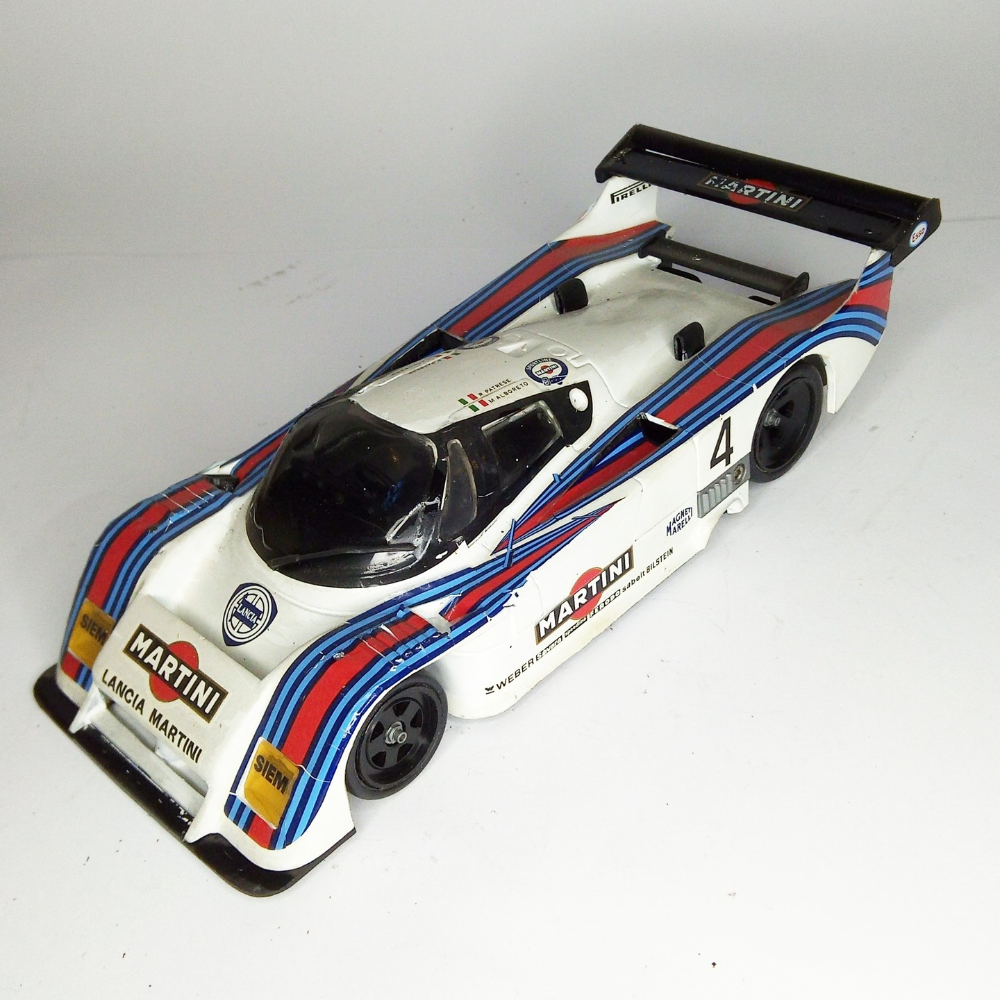

Auto e veicoli stradali · scale model archive
Lancia LC2 Martini
Lancia LC2 Martini — Kit: Protar, Scale: 1(24. Raced in 1982-83 Endurance championship, white metal body #1/24 #Protar

Photo gallery
English description
Raced in 1982-83 Endurance championship, white metal body
#1/24 #Protar
Descrizione italiana
Corse nel 1982-83 Endurance championship, white metal body.